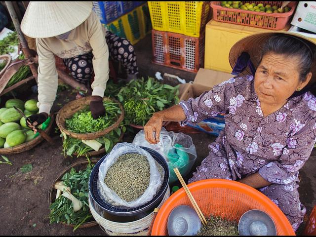
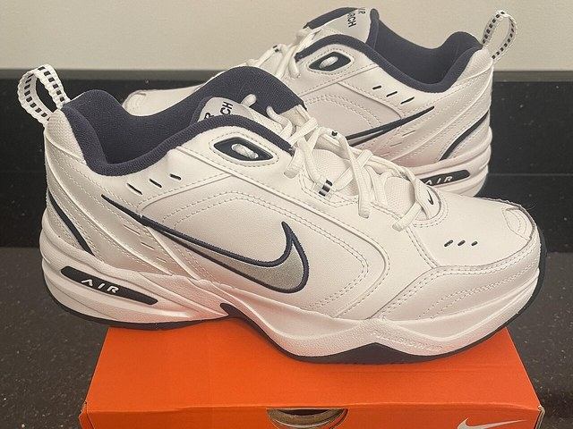
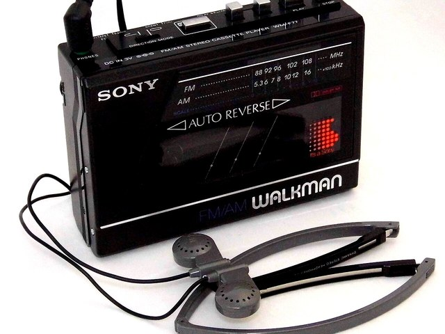

Sheet 1 / 15 · Lesson 1 · 10a A lesson in logos · 10b Product design
Lesson 1 · Logos and product design
Aim of the lesson
Lesson 1 · 10A–10B · 4 tiết
Kiến thức · Knowledge — After the lesson, students will be able to
explain key vocabulary used to describe product design;
describe the way the passive voice changes the focus of meaning in a sentence;
compare used to with other expressions of past habits.
Kỹ năng · Skills — After the lesson, students will be able to
demonstrate correct use of the passive voice in writing tasks;
practise using related word forms in production and advertising tasks;
perform clear speaking and writing tasks to express ideas on product topics.
Thái độ · Attitudes — After the lesson, students will be able to
appreciate the cultural and economic significance of local products and logos;
value the role of design and innovation in improving people's daily lives.
Kiểm tra bài cũ · 15'
5:00
Cách chơi
Hai đội, mỗi đội một người lên bảng một lượt.
Giáo viên đọc một tình huống Unit 9 (holidays): You arrived at the hotel; they had lost your booking. Đội viết đúng một câu quá khứ hoàn thành hoặc một câu hỏi chủ ngữ (Who booked the hotel?) trước thì được điểm.
8 lượt, đội thua kể lại Holiday Story SB tr. 106 bằng 5 cụm từ trên bảng.
Lead-in · Unit opener SB tr. 117
3:00Nhìn ảnh, trả lời câu hỏi. Rồi nghe track 79 và làm bài nghe.

Chợ Hội An — rau, giỏ, đồ địa phương
"Where do these products come from, and who buys them?"
Gợi ý trả lời
They're grown by local farmers and sold at the market every morning. Local people buy them because they're fresh and cheap — nothing is mass-produced.

Đôi giày thể thao có logo
"How do you recognize the brand without reading its name?"
Gợi ý trả lời
By the tick on the side — the logo is widely recognized, so the brand doesn't even need to print its name.

Máy nghe băng cassette đời 1986
"What did people use to do with this? Is it obsolete now?"
Gợi ý trả lời
People used to listen to cassettes on it and they would carry it everywhere. It's obsolete now — it was phased out when MP3 players and then smartphones arrived.
🎧 Track 79 · SB tr. 117 ex 2 — a radio programme about a basket seller in Hưng Yên (ảnh SB tr. 117) (43") Không phát được? Mở file 079 Track 079.mp3 trong thư mục AUDIO LIFE PRE-INTER.
Nghe 1
Track 79 · Chọn đáp án đúng
Chọn
1 · Where are the baskets made?
2 · Who buys them, and what for?
3 · How does he sell them?
Nghe 2 lần · so đáp án theo cặp
Speaking · SB ex 4
Tell your partner about the last thing you bought: What was it? Where did you buy it? Why? Do you know what company made it — and where it was made? Trả lời 2–3 câu, dùng ít nhất 1 câu bị động (It was made in … / It's sold …).
Bạn đã có bao nhiêu từ cho 3 nhóm của Lesson 1? (tổng cộng dồn cả 7 nhóm của unit)
4:00Gõ mọi từ / cụm bạn nghĩ ra, cách nhau bằng dấu phẩy. Tick nhóm bạn yếu. Ngày 7 gõ lại không nhìn sách.
What is it, who makes it, and how do you know the brand?
Gợi ý từ
product · producer · produce · production · productive · customer · company · logo · brand · advert · advertise · advertisement · advertiser · advertising · recognize · local producer · international company
How did people use to do things — and what changed?
Gợi ý từ
used to · didn't use to · Did you use to …? · records · vinyl · cassettes · CDs · downloads · streaming · headphones · record player · on the move · in the seventies · nowadays
danh từ 2 âm tiết → âm 1; động từ → âm 2; -tion / -tive → âm liền trước
PROduct – proDUCE · proDUCtion · proDUCtive · ADvert · ADvertise · adVERtisement
●customer●company●logo●brand●recognize●sell · buy · make●a local producer●an international company●be made / sold / invented in …
Nâng cao · B2
Thương hiệu và thị trường
brand awareness
mức độ nhận biết thương hiệu
Nike spends billions every year to keep its brand awareness high.
a household name
cái tên nhà nào cũng biết
Vinamilk has been a household name in Vietnam for decades.
a competitive market
thị trường cạnh tranh
Smartphones are sold in a highly competitive market, so prices fall fast.
a loyal customer
khách hàng trung thành
Apple's loyal customers queue for hours when a new phone comes out.
Sản xuất và quảng bá
mass-produced
sản xuất hàng loạt
Mass-produced furniture is cheap, but it rarely lasts.
a marketing campaign
chiến dịch quảng bá
The campaign for the new drink was launched on TikTok first.
target (young) consumers
nhắm tới người tiêu dùng (trẻ)
The adverts clearly target young consumers who shop on their phones.
Collocations · B2
launch a (new) product
ra mắt sản phẩm
Samsung launches a new model every spring.
be widely recognized
được nhận diện rộng rãi
The red cross is widely recognized as a symbol of medical help.
stand out from the competition
nổi bật so với đối thủ
A simple logo helps a small shop stand out from the competition.
build up a reputation for …
gây dựng danh tiếng về …
Biti's has built up a reputation for shoes that are built to last.
go viral
(quảng cáo) lan truyền chóng mặt
The advert went viral and the shop sold out in two days.
Group 2 · Thiết kế và chất lượng
Lesson 1What is the product like?
Core · SB tr. 120, 128
●user-friendly●old-fashioned●basic●up-to-date●fashionable●classic●useful●simple ↔ complicated●modern ↔ out-of-date●in fashion●the latest●popular at the moment
Nâng cao · B2
Khen một thiết kế
sleek/sliːk/
bóng bẩy, gọn và sang
The new laptop has a sleek metal body that fits in any bag.
minimalist
tối giản
The app has a minimalist design — one screen, three buttons.
durable/ˈdjʊərəbl/
bền, dùng lâu
Army boots have to be durable enough for months of training.
ergonomic/ˌɜːɡəˈnɒmɪk/
thiết kế hợp với cơ thể người dùng
An ergonomic chair stops your back hurting after a long shift.
eye-catching
bắt mắt
The packaging is eye-catching, so you notice it on the shelf.
Chê hoặc hoài nghi
cutting-edge
tiên tiến nhất (đôi khi là quá mới)
The hospital bought cutting-edge scanners, but nobody was trained to use them.
a gimmick/ˈɡɪmɪk/
chiêu trò hình thức, không thực chất
A phone that folds is a nice gimmick, but is it really useful?
Collocations · B2
built to last
làm để dùng lâu
My grandfather's watch was built to last — it still works after fifty years.
attention to detail
sự chú ý đến chi tiết
You can see the attention to detail in the stitching of the bag.
form and function
hình thức và công năng
A good stethoscope balances form and function.
good value for money
đáng đồng tiền
These headphones are good value for money.
stand the test of time
trường tồn qua năm tháng
The Coca-Cola logo has stood the test of time — it has hardly changed since 1886.
Group 3 · Ngày xưa và bây giờ
Lesson 1How did people use to do things — and what changed?
Core · SB tr. 120–121
⏪USED TO + V
thói quen hoặc trạng thái quá khứ, nay không còn; phủ định / câu hỏi bỏ -d
People used to buy CDs. · Did you use to have a Walkman?
🔁WOULD + V (B2)
hành động lặp lại trong quá khứ, không dùng cho trạng thái (would have)
Every Sunday my father would clean his records.
🔈/juːstə/ – /juːz/
used to và use to đọc /s/; động từ use đọc /z/
I used to buy CDs. · I use my phone.
●records · vinyl●cassettes●CDs●downloads · streaming●headphones●a record player●on the move●in the seventies / eighties●nowadays●when I was a child●before … was invented●bought his first record in 1973
Nâng cao · B2
Thay đổi lớn
obsolete/ˈɒbsəliːt/
lỗi thời hoàn toàn, không còn dùng
Cassette players are obsolete now — you can't even buy the tapes.
a breakthrough/ˈbreɪkθruː/
bước đột phá
The Walkman was a breakthrough: music you could carry.
revolutionize
cách mạng hoá
Streaming has revolutionized the way we listen to music.
a game-changer
thứ làm thay đổi cuộc chơi
For medical students, online lectures were a game-changer.
Bình thường hoá
the norm
chuyện bình thường, phổ biến
Paying by phone is now the norm in Hanoi cafés.
take … for granted
coi là hiển nhiên
We take free music for granted, but our parents paid for every song.
be used to + -ing
đã quen với việc …
I'm used to studying with my phone next to me.
Collocations · B2
in the days before …
thời trước khi có …
In the days before smartphones, people would print out maps.
be phased out
bị loại bỏ dần
CDs were phased out by the big shops around 2015.
make way for
nhường chỗ cho
Record shops made way for coffee chains on every high street.
a thing of the past
chuyện của quá khứ
Waiting a week for a photo to be developed is a thing of the past.
It's hard to imagine life without …
khó hình dung cuộc sống thiếu …
It's hard to imagine life without a phone in your pocket.
Ngữ pháp · The passive — từ SB tr. 119 lên B2
SB tr. 119B2
🧱HIỆN TẠI · QUÁ KHỨ (SB)
be + V3; nêu tác nhân bằng by khi cần
The logo is recognized everywhere. · The first laptops were produced in 1999.
⏳HAS / HAVE BEEN + V3 (B2)
kết quả kéo dài đến hiện tại, không rõ thời điểm
The logo has been changed twice since 2010.
🔑CAN / SHOULD / MUST BE + V3 (B2)
khả năng, lời khuyên, bắt buộc ở thể bị động
The device can be bought online. · Batteries must be recycled.
🗣️IS SAID / THOUGHT TO BE (B2)
thuật lại ý kiến chung, tránh nói "people say"
The Apple logo is said to be the most valuable in the world.
❓CÂU HỎI BỊ ĐỘNG
đảo be lên trước chủ ngữ
Was it invented in this country? · Where is it made?
⚠️KHÔNG DÙNG BỊ ĐỘNG
nội động từ không có tân ngữ: happen, arrive, exist
The problem was happened. → The problem happened.
Ngữ pháp · used to — từ SB tr. 121 lên B2
SB tr. 121B2
⏪USED TO + V (SB)
thói quen / trạng thái quá khứ, nay không còn
My mother used to have a Walkman.
🔁WOULD + V (B2)
hành động lặp lại; kể chuyện sinh động hơn; không dùng cho trạng thái
She would play the same tape every morning.
🧩BE / GET USED TO + -ing (B2)
quen / dần quen với — nghĩa khác hẳn used to
I'm used to streaming; my parents are getting used to it.
🚫NO LONGER · ANY MORE (B2)
nhấn mạnh sự thay đổi
Nobody buys cassettes any more. · Vinyl is no longer cheap.
📅PAST SIMPLE cho hành động một lần
thời điểm cụ thể → không dùng used to
He bought his first record in 1973.
✍️ĐỪNG QUÊN -d
khẳng định used to; sau didn't / Did → use to
I used to … · I didn't use to … · Did you use to …?
Chunks cho Lesson 1 · 5 chức năng · 15 chunks
Lesson 1
1 · Tả sản phẩm bằng bị động (B2)
It was designed by … / It was first launched in …
It has been sold in over … countries since …
It can be bought … / It is said to be …
It was first launched in 1979 and it has been sold in more than 100 countries since then.
2 · Ngày xưa – bây giờ (B2)
Back in the day, people would … / used to …
These days, … is the norm
It's no longer …, and it's hard to imagine life without …
Back in the day, my father would record songs from the radio; these days streaming is the norm.
3 · Đánh giá thiết kế
What strikes me most is …
In terms of design, it's …
It's not just …, it's also …
What strikes me most is the attention to detail — every button has a purpose.
4 · Khung Part 2 (long turn)
I'd like to talk about … / The one that comes to mind is …
What makes it special is … / The reason I chose it is …
All in all, … / That's why I …
The logo that comes to mind is the tick on my running shoes.
5 · Trả lời Part 3
It depends on … / I'd say …
On the one hand, … On the other hand, …
Take …, for instance.
I'd say it depends on the product — for clothes the logo matters a lot, for medicine not at all.
Nâng cấp câu A2 → B2 · Lesson 1
4 mẫu
A2
B2
Sony made the Walkman in 1979.
The Walkman was launched by Sony in 1979 and has been copied ever since.
People say the Apple logo is the best.
The Apple logo is said to be the most widely recognized in the world.
This phone is good and easy.
It's sleek, user-friendly and built to last — what strikes me most is the attention to detail.
In the past, people bought CDs. Now they don't.
Back in the day, people would queue for a new CD; nowadays that's a thing of the past.
A logo is how people recognize your company. When you see a tick logo on an advertisement, for example, you know it's Nike sportswear. The gold 'M' on red says 'McDonald's'. And everyone knows who made the technology you are using when it has an apple on it.
The Apple logo is one of the simplest but most successful logos in the world. Apple products are used in millions of homes and offices. Over five hundred iPhones are sold every minute and the company makes more than two hundred billion dollars a year. An Apple product is recognized by people all over the world because of its design and the famous logo.
However, when the first Apple laptops were produced in 1999, Apple realized they had a problem with their logo. When the laptop was put on a table, the customer saw the Apple logo on the top of the laptop. But when the laptop was open, the logo was upside down. This wasn't a problem for the person using the laptop, but it didn't look good to other people. In the end, the logo was turned round so that the logo was seen correctly by other people. Why was it so important to Apple? Because when you see other people using a product, you are more likely to buy it.
Life Pre-Intermediate SB tr. 118 · Unit 10A · nguồn: Unit 10 AB.pptx (Đạt) · 🎧 Track 80 ở cột bên phải
🎧 Track 80 · bài đọc được đọc — nghe và đọc theo lần 2 Không phát được? Mở file 080 Track 080.mp3 trong thư mục AUDIO LIFE PRE-INTER.
Đọc A
Đọc bài, chọn True / False
Đọc
1The writer says the Nike tick and the McDonald's "M" work even without the company name.
2According to the article, Apple makes about twenty billion dollars a year.
3On the first Apple laptops, the logo faced the user, so other people saw it upside down.
4Apple decided the problem was not important and kept the logo as it was.
5The writer believes we are more likely to buy something when we see others using it.
Khác 5 câu của SB ex 2 — làm cả hai
Đọc B
Từ trong bài · chọn từ B2 cùng nghĩa
Từ vựng
1recognize (a logo) →
2upside down →
3be turned round →
4be more likely to buy →
5one of the simplest but most successful logos →
Đọc C · SB ex 3 — thảo luận với câu trả lời mẫu B2
1 · Do you agree that seeing other people use a product makes you want to buy it?
PointTo a large extent, yes. WhyWhen a product is widely recognized, it feels safe — you're not the first to try it. ExampleHalf my class bought the same stethoscope because it has built up a reputation for reliability among the seniors.
2 · How important are logos? Do they make you buy things?
PointThey're important for brand awareness, but they rarely make me buy. WhyI'd say they help a household name stand out from the competition; the decision still comes down to price and whether the thing is built to last.
Pronunciation · Track 81 — trọng âm trong họ từ
10a
🎧 Track 81 · SB tr. 119 ex 6 — nghe, gạch chân âm nhấn, nghe lại và đọc theo Không phát được? Mở file 081 Track 081.mp3 trong thư mục AUDIO LIFE PRE-INTER.
Phát âm
Nghe rồi xếp 10 từ theo âm tiết được nhấn
Phân loại
Đọc to từng cột sau khi kiểm tra
10b Listening · Track 82 — the Sony Walkman
Lesson 1 · 10b
Trước khi nghe
SB tr. 120 ex 1 (nối tính từ thiết kế) và ex 3: How do you listen to music — records, cassettes, CDs, downloads or streaming?
🎧 Track 82 · SB tr. 120 ex 4–5 — a radio programme about a famous product (1'59") Không phát được? Mở file 082 Track 082.mp3 trong thư mục AUDIO LIFE PRE-INTER.
Nghe 2
Nghe lần 1 · True / False
Nghe
1In the seventies, people played their music at home on record players.
2In the seventies, people mainly bought music on cassettes.
3The Walkman went on sale at the end of the seventies.
4Other companies never managed to copy the idea.
5The name "Walkman" was eventually added to an English dictionary.
6The speaker says the product succeeded because it did so many different things.
Nghe 3
Nghe lần 2 · chọn đáp án
Chọn
1 · Why does the speaker call the idea "simple"?
2 · Which decade does the speaker describe as the time you saw Walkmans everywhere?
3 · What, according to the speaker, did the Walkman give people for the first time?
Đáp án khác SB ex 5 — kiểm tra cả hai
Pronunciation · Track 83 — /s/ hay /z/?
10b
🎧 Track 83 · SB tr. 121 ex 9 — used to /juːstə/ · use /juːz/ Không phát được? Mở file 083 Track 083.mp3 trong thư mục AUDIO LIFE PRE-INTER.
Phát âm
Âm cuối của từ in đậm là /s/ hay /z/?
Chọn
1 · I used to buy CDs every month.
2 · Nowadays I use my phone for everything.
3 · We didn't use to download music.
4 · My grandparents still use a radio in the kitchen.
Đọc to 4 câu sau khi kiểm tra
Speaking my life · SB tr. 119 ex 11 — đoán công ty
10a
3:00Tối đa 10 câu hỏi Yes/No bị động. Đổi cặp 2 vòng.
Choose a type of product: a drink · a car · clothes · furniture · technology. Think of a famous company. Your partner asks yes/no questions and guesses.
You should say:
Was it invented in this country? / Is it made in Asia?
Is it sold in every supermarket? / Can it be bought online?
Is the logo widely recognized? / Is it said to be expensive?
A: Is it a household name? — B: Yes, it is. — A: Has it been sold here for more than twenty years? — B: Yes, it has.
Sheet 4 / 15 · Lesson 1 · đề nói HP4 topic 2 · 10 · Part 1–2–3
Speaking Lesson 1 — logos and design
Format đề nói khối dài hạn
Lesson 1
Part 1 · Interview · 2–3'
Giám khảo hỏi 10 câu về bản thân / một chủ đề quen thuộc. Trả lời 2–3 câu, có lý do hoặc ví dụ.
Part 2 · Long turn · 5'
Thẻ đề Describe … You should say: (3 gạch đầu dòng) … and explain … Chuẩn bị 1', nói 3–4' liên tục.
Part 3 · Two-way discussion · 3–4'
3 câu hỏi mở rộng cùng chủ đề. Mỗi câu 3–4 câu trả lời: quan điểm → lý do → ví dụ → đánh giá.
Đề dùng trong Lesson 1
Đề nói HP4 khối dài hạn: Topic 2 (brand logo) và Topic 10 (a beautifully designed product) — đúng nội dung 10a–10b. Thẻ Part 1 dưới đây là bộ câu hỏi luyện thêm cùng dạng.
Part 1 · Interview — shopping and products
Lesson 1
0:30Trả lời = Point + Why (+ Example)
Do you enjoy shopping? Why / why not?
What was the last thing you bought?
Do you prefer shopping online or in shops?
Are you interested in famous brands?
Do you usually buy the same brands as your friends?
What kind of products do you spend most money on?
Do adverts influence what you buy?
Is there a product you would never buy? Why?
Did you use to buy different things when you were younger?
What product do you use every day?
2 · What was the last thing you bought?
PointA pair of wireless headphones — nothing fancy. WhyThey were good value for money and lightweight enough for the bus to the academy. ExampleThey were made in China, like most electronics, but they can be repaired here, which mattered to me. What strikes me most is the battery — a whole week on one charge.
4 · Are you interested in famous brands?
PointNot really, to be honest. WhyA household name usually means a higher price, and I'd rather pay for something durable than for brand awareness.
7 · Do adverts influence what you buy?
PointLess than they used to. WhyMost adverts target young consumers with emotion rather than facts. ExampleThe last marketing campaign that worked on me went viral on TikTok — I bought the drink and it was a gimmick.
9 · Did you use to buy different things when you were younger?
PointCompletely. WhyI used to spend everything on game cards, and my brother and I would swap them every weekend. ExampleThat's a thing of the past — nowadays I'm used to buying only what I need for my studies.
Part 2 · Long turn — 2 thẻ đề HP4
Lesson 1
4:00PointHowExampleWhyEvaluation
Topic A · HP4 Topic 2
Describe a brand logo that you like.
You should say:
What the logo looks like
Which product or company it represents
Where you usually see it
and explain why you like this logo.
Bài mẫu Topic A — ≈ 350 từ, 3–4 phút
PointThe logo that comes to mind is the simple white tick on the side of my running shoes. It's just one curved line, but it is widely recognized — the company no longer needs to print its name next to it.
HowIt represents a sportswear brand that has been a household name since the seventies. The logo was designed by a student in 1971, and it is said to be one of the cheapest logos ever bought — the company paid her about thirty-five dollars for it. Since then it has been put on shoes, T-shirts, caps and even hospital scrubs. The company was first launched in 1964 under a different name, selling shoes out of a car; the tick was a breakthrough that made way for a whole new style of advertising, and it's hard to imagine the brand without it.
ExampleI see it everywhere: on the football pitch at the academy, on the feet of half my classmates, and in every marketing campaign that goes viral before a big match. Back in the day, my father would buy fake copies at the market; these days the real ones can be bought online in five minutes.
WhyThe reason I like it is that it's minimalist and eye-catching at the same time. In terms of design, it suggests movement — speed, a smile, a tick that says "yes". It stands out from the competition without a single word, and it has stood the test of time: it has hardly changed in fifty years, while other companies redesign their logos every few years. It also works at any size: on a giant billboard or on the tongue of a shoe, it looks exactly the same.
EvaluationAll in all, I like it because it proves that a good logo is about form and function, not decoration. It builds up brand awareness quietly — and, to be honest, it makes me feel a little faster every time I put the shoes on. If a first-year student asked me which logo to study, this is the one I'd choose.
3 gạch đầu dòng + explain · 6 bị động (2 B2) · 15 cụm B2 · ≈ 350 từ
Topic B · HP4 Topic 10
Describe a product you saw that was beautifully designed.
You should say:
What the product was
Where you saw it
What it looked like
and explain why you think it was beautifully designed.
Bài mẫu Topic B — ≈ 340 từ, 3–4 phút
PointI'd like to talk about a digital stethoscope I saw at a medical equipment fair in Hanoi last spring. Most stethoscopes look exactly like the ones that were invented two hundred years ago, so this one really caught my eye.
HowIt was displayed on a small stand near the entrance. What struck me most was how sleek it looked — a matte black tube, no visible screws, and a tiny screen in the chest piece that shows the heart rate. It's said to be the first model that can be connected to a phone, so the sound can be recorded and sent to a specialist. The model has been sold in Vietnam since last year, mostly to hospitals. For a student, it could revolutionize the way we learn to listen to the heart: instead of guessing, you can replay the sound ten times.
ExampleThe salesman let me try it on a classmate. The earpieces were ergonomic — they didn't hurt after ten minutes, which is rare — and the whole thing was lightweight and clearly built to last. The attention to detail was everywhere, even in the packaging. It also came with a small app that shows the heartbeat as a wave on the screen — a real game-changer in a noisy ward.
WhyI think it was beautifully designed because it solved real problems instead of adding a gimmick. In terms of design, it balances form and function: it's minimalist, but every part has a purpose. It's not just pretty, it's also durable and user-friendly. Of course, it wasn't exactly good value for money for a student — nearly ten million đồng — but a good instrument stands the test of time. And unlike many cutting-edge gadgets, it doesn't look obsolete after a year, because the design is so simple.
EvaluationAll in all, it changed the way I think about medical equipment. Back in the day, doctors would accept ugly, uncomfortable tools; now cutting-edge devices are designed for the people who use them. That's why I still remember it.
3 gạch đầu dòng + explain · 7 bị động (4 B2, có has been) · 16 cụm B2 · bối cảnh y khoa · ≈ 340 từ
Luyện
Dàn ý 5 bước cho Topic A hoặc B, rồi bấm giờ nói 3–4 phút
Planner
Ghi âm bằng điện thoại · nghe lại · đếm câu bị động
Part 3 · Two-way discussion
Lesson 1
1:00PointWhyExampleEvaluation
Topic A · HP4 Topic 2
1 · How important is a logo for a company?
PointI'd say it's essential, especially in a competitive market. WhyA logo is the fastest way to build up brand awareness: people recognize a shape before they read a name. ExampleTake the red cross, for instance — it is recognized in every country, even by people who can't read. EvaluationWithout a logo, a company is just a name on a list.
2 · What makes a good logo?
PointSimplicity, above all. WhyA minimalist logo can be printed on a pen or a building and still be clear. ExampleThe logos that have stood the test of time — the tick, the apple, the golden M — are all one shape and one colour. EvaluationOn the other hand, a logo full of gimmicks dates very quickly.
3 · Should companies change their logos over time?
PointIt depends on how much they change. WhySmall updates keep a brand up-to-date, but a complete redesign confuses loyal customers. ExampleGap tried a new logo in 2010 and was forced to go back within a week because customers complained. EvaluationSo yes — but slowly, and only if the old one looks obsolete.
Topic B · HP4 Topic 10
1 · Do people in your country care about product design?
PointMore and more, particularly young people in the cities. WhyIn the days before online shopping, people chose what was available; now they compare sleek designs from all over the world on their phones. ExampleMy classmates will pay extra for eye-catching headphones. EvaluationOlder people, though, still care more about whether something is built to last.
2 · Should products look beautiful or be useful?
PointIdeally both — form and function. WhyA beautiful tool that doesn't work is a gimmick; a useful tool that's ugly won't be used. ExampleAn ergonomic hospital chair looks strange, but nurses love it because it saves their backs. EvaluationIf I had to choose, function comes first — beauty makes people want to use it.
3 · Do men and women like the same product designs?
PointTo some extent, but the differences are smaller than advertisers think. WhyMany marketing campaigns still target women with pink and men with black, which is pure marketing. ExampleIn my class, everyone wants the same minimalist laptop. EvaluationTaste depends on the person and the purpose, not the gender.
Bài 1 · Họ từ produce / advertise — chọn dạng đúng trong câu
Lesson 1
Bài 1
Chọn dạng từ đúng cho 8 câu
Chọn
1Vinamilk more than a million litres of milk a day.
2The of the new vaccine will start in March.
3Our hospital is one of the biggest of medical waste in the city.
4It was a very shift: we saw forty patients before lunch.
5The company spends millions on online .
6A thirty-second during the football final costs a fortune.
7Pharmacies are not allowed to prescription drugs on TV.
8The biggest on Vietnamese TV is a milk company.
Đọc to câu đúng với trọng âm: PROduct – proDUCE · ADvert – adVERtisement
Bài 2 · Câu bị động B2 — the stethoscope
Lesson 1
Bài 2
Chọn dạng đúng cho 10 chỗ trống (hiện tại, quá khứ, has been, can / should be, is said to)
Cloze
The stethoscope by a French doctor, René Laennec, in 1816. The first model of wood and looked like a small trumpet. Since then, the design many times, and today millions of stethoscopes every year. A basic model online for less than the price of a textbook, but a good one by a doctor before you buy it. The stethoscope the most widely recognized symbol of medicine. Last month, new digital models to our class for a trial, and the results next year. Nobody knows yet whether the old design completely.
Mốc thời gian: 1816 · since then · today · last month · next year
Bài 3 · used to · would · be used to — xếp câu và đặt cụm
Lesson 1
Bài 3
a–b: chạm vào từ theo thứ tự · c–d: chọn đúng cụm rồi chạm vào vị trí của nó
Xếp câu
a · Câu hỏi về thói quen ngày xưa
b · Hành động lặp lại trong quá khứ (would)
c · Chọn cụm đúng: ngày xưa người ta mua nhạc trên đĩa vinyl
d · Chọn cụm đúng: tôi đã quen với việc học bằng điện thoại
Đọc to a và c với /juːstə/
Bài 4 · Nâng cấp A2 → B2 — câu nào đúng và tự nhiên?
Lesson 1
Bài 4
Chọn bản B2 đúng ngữ pháp của mỗi câu A2
Chọn
1 · People know this logo everywhere.
2 · Sony made the Walkman in 1979 and other companies copied it.
3 · People say the logo cost only 35 dollars in 1971.
4 · This chair is good for your back.
5 · In the past my father cleaned his records every Sunday.
6 · Now I am OK with online shopping.
Đọc to câu đúng
Bài 5 · Viết 100–120 từ — một thiết bị y tế bạn dùng
Lesson 1
Bài 5
Describe a piece of medical equipment you use in your training (a stethoscope, a thermometer, a blood-pressure monitor …). Viết ở lớp nếu còn giờ, không thì ở nhà; rồi nói lại 1 phút không nhìn giấy
Viết · Nói
Bắt buộc có:
≥ 4 câu bị động: 1 was invented / designed, 1 has been, 1 can / should be, 1 is said to be
≥ 4 tính từ / cụm Group 2 (durable, ergonomic, sleek, built to last …)
1 câu ngày xưa – bây giờ (in the days before … / would …)
1 câu kết All in all / Overall
Số từ: 0
Mẫu (≈ 120 từ)
The piece of equipment I use most is a digital blood-pressure monitor. The first automatic monitors were designed in the 1970s, and since then the design has been improved so much that a patient can be checked in thirty seconds. Mine is lightweight and durable — it has survived two years in my backpack — and the cuff is ergonomic, so it doesn't hurt older patients. It is said to be accurate enough for hospital use, which is why our teachers recommend it. In the days before these monitors, nurses would listen with a stethoscope and a mercury column; that is now a thing of the past. All in all, it isn't eye-catching, but it is built to last and it was good value for money.
Đổi bài: đếm 4 câu bị động và 4 cụm Group 2
Homework · Lesson 1
Lesson 1
SB · Workbook
SB tr. 119 ex 9 (Gap) + tr. 128 ex 1–5 (Review)
Workbook tr. 83 (word forms)
SB tr. 121 ex 11: 5 câu used to + câu hỏi
Viết 100–120 từ
Bài 5 — Describe a piece of medical equipment you use. ≥ 4 câu bị động (1 has been, 1 can be) và ≥ 4 tính từ Group 2.
Ghi âm Part 2
Topic A hoặc B, 3–4 phút, nộp file ghi âm. Tự chấm 5 ô checklist trước khi nộp. Làm thêm HP4 Topic 3 (advertisement) nếu còn thời gian.
Quiz Lesson 1 · 10 cụm — gập sách
5' cuối giờ
Quiz
Đọc nghĩa và gợi ý dạng từ, gõ cụm tiếng Anh
Điền
1người hoặc công ty làm ra sản phẩm (danh từ, họ từ produce)
2cái tên nhà nào cũng biết (cụm 3 từ, a … name)
3được nhận diện rộng rãi (bị động, 3 từ)
4làm để dùng lâu (cụm 3 từ, built …)
5thiết kế hợp với cơ thể người dùng (tính từ)
6lỗi thời hoàn toàn, không còn dùng (tính từ)
7coi là hiển nhiên (cụm, take … for …)
8"ngày xưa bố tôi thường lau đĩa" — dùng would (viết cả câu ngắn)
Kiến thức · Knowledge — After the lesson, students will be able to
classify vocabulary related to possessions, consumer habits and website design;
explain the meaning of stuff, minimalism concepts, and useful expressions for giving opinions;
summarize the main ideas from the reading text Is stuff winning? and the listening task about website design.
Kỹ năng · Skills — After the lesson, students will be able to
analyse reading passages to distinguish between facts and opinions;
apply target vocabulary and grammar structures in speaking activities about products and online habits;
create short presentations to express personal views on consumerism and website design.
Thái độ · Attitudes — After the lesson, students will be able to
value simplicity and responsible consumer choices in modern life;
appreciate the role of technology and design in improving daily communication and business.
Checking the previous lesson · 15'
5:00
Hai hoạt động
Chuỗi Did you use to …? — học viên 1 hỏi học viên 2, học viên 2 trả lời bằng used to / would rồi hỏi người tiếp theo; không được lặp chủ đề (music · phones · games · food · school).
Mini quiz bị động — giáo viên đọc 5 câu chủ động (Sony launched the Walkman in 1979. / You can buy it online. / People say the logo is the best.), cả lớp viết dạng bị động; 3 học viên đọc đáp án.
"Is your desk like this? What would you get rid of first?"
Gợi ý trả lời
To be honest, my desk in the dormitory is a bit like this. I'd declutter the papers first — half of them are old handouts I keep just in case.
Một buổi chiều với laptop và các website
"Which websites do you use every day, and what makes a website good?"
Gợi ý trả lời
I use the academy portal for lectures and Shopee for everything else. A good site has an intuitive interface, loads in seconds and doesn't bombard you with adverts.
Đồ cũ: giữ hay bỏ?
"Do you keep old things "just in case"? Why do people hoard?"
Gợi ý trả lời
I do — I still have three old phones. People hoard because throwing things away feels like losing money, even when the things are obsolete.
Bạn đã có bao nhiêu từ cho 2 nhóm của Lesson 2?
3:00Gõ mọi từ / cụm bạn nghĩ ra. Tổng số từ và nhóm yếu cộng chung ở Lesson 1.
Do we have too much stuff — and too much screen time?
Gợi ý từ
stuff · thing · untidy · tidy · throw away · throw out · keep just in case · get rid of · put away · give away · recycle · a pile of · digital devices · unread emails · minimalist · social media · go online / offline · bored with
I bought another book today and have put it on a pile of unread books on my new coffee table. There's no more space on the table, which also has digital devices, coffee cups, and some socks I need to put away in my bedroom. But my bedroom is also full of stuff. I pick up my phone. The email inbox shows 243 unread emails. I've already missed three calls since I got home. I also need to reply to a few text messages from work.
I know that I want less stuff in my life, but at the moment the stuff is winning. I seem to spend all my time buying things, and then putting them away, when really I'd like more time for family, friends and hobbies. The good news is that now there is an excellent website to help people like me, called The Minimalists. When Ryan Nicodemus and Joshua Fields Millburn set up this website, they had 52 visitors in the first month. Two years later, it has over two million visitors a month. All these people are interested in how they can also have a 'minimalist' life.
Ryan Nicodemus explains how it began. He was working between sixty and eighty hours a week and spending his free time buying more products to make himself feel better. One day, he decided to start working fewer hours and to get rid of all his stuff. After a while, he realized he was much happier and he wanted to share his ideas with others. So… "minimalist". One of their ideas is to play the thirty-day minimalism game. On day one you throw out, sell, recycle or give away one object in your life. Then on day two, two objects. On day three, three objects. And by the end of the month, you have thrown away lots of your stuff.
In the same way that stuff can fill the space in our homes, some people think that there is a problem with having lots of stuff in our heads. Often people go online because they don't want to be doing nothing, so they keep their brains busy with unnecessary activities. According to a recent survey, most people born between 1980 and 2000 use their phones when they have nothing else to do: 46% check their social media, 43% play games, and a fifth do some online shopping. They buy more stuff in order to avoid getting bored.
In the same survey, some people said they were bored with their screens and online life; for example, 27% of them said they were bored of watching TV and 14% were bored of social media. So perhaps we need more time without all these devices and, like Nicodemus and Millburn who have less stuff in their homes, we should also have less stuff in our heads. Maybe one way to begin is by going offline for fifteen minutes a day and seeing if you feel better!
Life Pre-Intermediate SB tr. 122–123 · Unit 10C · nguồn: Unit 10 CD.pptx (Đạt) · 🎧 Track 84 ở cột bên phải
Trước khi đọc
SB tr. 122 ex 1–3: đọc hội thoại, tìm stuff (U) và thing (C); trả lời: Is your home full of stuff, or tidy with only a few things?
🎧 Track 84 · bài đọc "Is stuff winning?" — nghe và đọc theo lần 2 (4'36") Không phát được? Mở file 084 Track 084.mp3 trong thư mục AUDIO LIFE PRE-INTER.
Đọc A
Ý chính của bài đọc
Chọn
1 · What is the article mainly about?
Đọc B
Fact, ý kiến của tác giả, hay ý kiến của người khác? Xếp 8 câu (viết lại từ bài đọc)
Phân loại
Tín hiệu: số liệu → fact · I know / we should → tác giả · some people / many people say → thuật lại
Đọc C
Đoạn văn mới cùng chủ đề — chạm vào câu nêu ý kiến riêng của người viết
Đọc
Which sentence gives the writer's own opinion?
At our academy, a survey of 120 third-year cadets found that 71% use their phones for more than four hours a day.Most of them said they were simply bored between lectures.Some teachers claim that this is why students remember less than they used to.I believe the real problem is not the phone itself but mindless scrolling, and the solution is a fixed hour of digital detox every evening.
Câu 1 và 2 = fact và số liệu thuật lại; câu 3 = ý kiến người khác (Some teachers claim); câu 4 = tác giả (I believe).
10d Real life · Track 85 — Sergio and Rachel plan a website
Lesson 2 · 10d
Trước khi nghe
SB tr. 124 ex 1 (7 từ về website) và ex 3: hai người bán đĩa cũ đang bàn về website mới của cửa hàng. Đọc 8 chủ đề ở ex 3 và đoán họ sẽ bàn chủ đề nào.
🎧 Track 85 · SB tr. 124 ex 3–4 — discussing opinions about a new website (1'53") Không phát được? Mở file 085 Track 085.mp3 trong thư mục AUDIO LIFE PRE-INTER.
Nghe 4
Nghe lần 1 · True / False
Nghe
1Rachel has already checked that nobody else is using the website name.
2Sergio wants to wait a few weeks before buying the name.
3Rachel thinks the first version of the home page has too much text.
4Rachel suggests a photo of the shop at the top of the home page.
5Sergio thinks an "About us" page is a bad idea.
6They agree that customers should contact them through the video page.
Nghe 5
Nghe lần 2 · điền từ còn thiếu trong 4 cụm nêu ý kiến (1 từ)
Nghe
1"I see what you , but we can have a photo of the shop at the top."
2"In my , it's more important that people see the records for sale."
3"Maybe you put the text there."
4"I'm not about that. Regular customers will want to call or email us."
So với box Discussing opinions SB tr. 124 — rồi nâng cấp bằng Chunks 2–4
Speaking my life · SB tr. 124 ex 6–7 — lên kế hoạch website
Lesson 2 · 10d
8:00Nhóm 3–4 · mỗi người: hỏi ×2 · nêu ý kiến ×3 · đồng ý / không đồng ý ×2 · đề xuất ×1 — dùng chunk B2
You are going to plan a new website for a small business (a second-hand bookshop, a clinic, a coffee cart …). Discuss, then present your plan.
You should say:
What are you going to sell, and what is the business called?
What pages do you need, and how will you show the product?
What else will you have — videos, a blog, a secure payment system?
Present in one minute: name · pages · one feature that makes the site stand out from the competition.
Thảo luận mẫu — đoạn mở đầu 1 phút (≈ 150 từ), 3 người
Lan: OK — we're selling second-hand medical textbooks. What do you think about the name "Second Reading"?
Minh: I couldn't agree more — it's short and it explains the idea. From my point of view, the home page should show the ten cheapest books with prices.
Hoa: That's a fair point, but I'm afraid I don't see it that way: people want to see one book clearly, not ten. I'd argue that one big photo and a search box work better, and the user interface has to be intuitive.
Lan: I see where you're coming from. Why don't we add a short video of the shop on the 'about us' page?
Minh: I'm not entirely convinced — a video is expensive and it won't load in seconds on 3G. I'd suggest we start with photos and a secure payment system — we could always add a video later. What's your opinion, Hoa?
Hoa: That's exactly how I see it. So: one photo, a search box, secure payment, and a contact page with our phone number.
3 câu hỏi ý kiến · 4 ý kiến · 5 đồng ý / không đồng ý · 3 đề xuất · 7 từ Group 5 — trong 8 phút mỗi người đạt đủ số ở checklist
Sheet 9 / 15 · Lesson 2 · đề nói HP4 topic 1 · HP3 topic 4 · Part 1–2–3
Speaking Lesson 2 — products and technology
Đề dùng trong Lesson 2
Lesson 2
Part 1 · bộ câu hỏi của Khoa
Bộ "daily activities" trong đề HP2–HP4 (có câu About how many hours are you online every day?) — dùng nguyên văn.
Part 2 · HP4 Topic 1
Describe a product that you would like to buy — đúng 10c (mua sắm, đồ đạc).
Part 2 · HP3 Topic 4
Describe a piece of technology you use frequently — đúng 10d (website, app, đời sống số).
Part 1 · Interview — daily activities (đề Khoa)
Lesson 2
0:30Trả lời = Point + Why (+ Example)
When do you wake up?
When do you go to bed?
What part of the day do you like most?
How many times do you brush your teeth?
Do you eat breakfast with your family?
What do you usually eat for breakfast?
Who makes dinner in your family?
About how many hours are you online every day?
Do you usually do the same things at the same time each day?
What do you want to change in your daily routine?
3 · What part of the day do you like most?
PointEarly evening, after the last lecture. WhyIt's the only time I'm completely offline — I switch off notifications and play football. ExampleThe rest of the day I'm bombarded with messages from five group chats.
8 · About how many hours are you online every day?
PointProbably four or five, if I'm honest. WhyTwo of them are for lectures and the academy portal, but the rest is mindless scrolling. ExampleAccording to my phone, Sunday is the worst — nearly seven hours.
9 · Do you usually do the same things at the same time each day?
PointYes — the academy timetable decides that for me. WhyWe get up at the same time, eat at the same time, and the routine is the norm here. ExampleThe only thing I control is whether I browse the internet or read before lights out.
10 · What do you want to change in your daily routine?
PointI'd like to cut down on screen time in the evening. WhyI'm convinced that the last hour on my phone ruins my sleep. ExampleMy plan is a digital detox after nine — phone in the drawer, book on the bed.
Part 2 · Long turn — 2 thẻ đề
Lesson 2
4:00PointHowExampleWhyEvaluation
Topic A · HP4 Topic 1
Describe a product that you would like to buy.
You should say:
What product it is
When you want to buy it
Whether it has any special features
and explain why you want to buy it.
Bài mẫu Topic A — ≈ 345 từ, 3–4 phút
PointThe product I'd like to buy is a good pair of noise-cancelling headphones. It sounds like a small thing, but for a student in a dormitory of eight people, silence is a luxury.
HowI'm planning to buy them at the end of this semester, once the exams are over and I've saved enough. I refuse to make it an impulse buy — I've been tempted to buy a cheap pair three times already, and each time I reminded myself that a cheap pair would be a waste of money. My roommate keeps asking why I don't just order them now, but the answer is patience: the price usually drops after a new model is launched.
ExampleThey do have special features. The main one is active noise cancelling, which blocks the sound of the corridor so I can study. They're also lightweight and durable — it is claimed that the battery lasts thirty hours — and the app that controls them has an intuitive user interface: one screen, three buttons, no pop-ups. The reviews say the noise cancelling works even on a motorbike, which I'll test on the first day.
WhyThe reason I want them is simple: they would help me cut down on wasted time. According to my own phone, I lose about two hours a day to mindless scrolling because I can't concentrate in a noisy room. I'm convinced that a quiet hour with these headphones is worth more than a whole evening of noise. And unlike the clutter I've accumulated over three years, this is one possession I'd actually use every day. In the days before I had a phone, I would study in silence; now silence is something I have to buy. It's also the kind of purchase my parents would understand — a tool for studying, not a toy.
EvaluationAll in all, it's not about consumerism or the brand — it's about buying one useful thing instead of ten useless ones. If they help me live a simpler life and pass my exams, they will have been worth every đồng.
3 gạch đầu dòng + explain · 14 cụm B2 (Group 4–5) · 2 tín hiệu fact / opinion · 1 câu in the days before / would · ≈ 345 từ
Topic B · HP3 Topic 4
Describe a piece of technology you use frequently.
You should say:
What the technology is
When you started using it
How you use it
and explain how it has improved your life.
Bài mẫu Topic B — ≈ 335 từ, 3–4 phút
PointThe piece of technology I use most is a medical dictionary app on my phone. It's not exciting, but I open it more often than any social media.
HowI started using it in my first year, when a senior recommended it, and I've used it almost every day since. It has a free version with adverts and a subscription without them; I paid for the subscription last year because I was bombarded with pop-ups every time I looked something up. The subscription costs about the same as two bowls of phở a month, so it's a cheap kind of clutter-free technology.
ExampleI use it in three ways. In lectures I check terms I don't know; in the library I read the short articles, which are kept up to date by real doctors; and on the ward I use the search box to find a drug in seconds. The user interface is intuitive and the pages load in seconds, even on the hospital wifi, which is far worse than 3G. The app is also responsive, so it looks the same on my phone, my tablet and the library computer.
WhyIt has improved my life in two ways. First, it saves time: in the days before the app, I would carry a heavy dictionary to every class. Second, it has changed the way I study. Research suggests that looking a word up at the moment you need it helps you remember it, and that's exactly what happens. I'd argue that it's the one app on my phone that isn't a waste of money. It has also made me a more careful reader: when a definition is one tap away, you stop guessing.
EvaluationOf course, it's also the app that keeps me online. So from my point of view, the best technology is the kind you use with a purpose and then switch off — and this app passes that test. It's a tool, not a habit — and that's the difference.
3 gạch đầu dòng + explain · 13 cụm B2 · bối cảnh y khoa · ≈ 335 từ
Luyện
Dàn ý 5 bước cho Topic A hoặc B, rồi bấm giờ nói 3–4 phút
Planner
Ghi âm · nghe lại · đếm cụm B2
Part 3 · Two-way discussion
Lesson 2
1:00PointWhyExampleEvaluation
Topic A · HP4 Topic 1
1 · What kinds of products do young people in your country like to buy?
PointMostly phones, headphones and clothes — things that are seen. WhySocial media makes every purchase public, so young people buy what looks good in a photo. ExampleAccording to recent figures, online shopping is growing fastest among people under 25. EvaluationMuch of it is impulse buying, in my view.
2 · Is it important to buy branded products?
PointFor some things, yes; for most, no. WhyA brand is a promise of quality — a durable pair of boots for training is worth the price. ExampleBut a branded T-shirt is often a waste of money; the same factory makes the unbranded one. EvaluationI'm inclined to think we pay for the logo more than the product.
3 · Why do some people buy things they don't need?
PointMainly because shopping has become entertainment. WhyWhen people are bored, they browse shopping apps the way they used to watch TV, and consumerism tells them the next thing will make them happy. ExampleResearch suggests that most impulse buys happen late in the evening — my roommate has accumulated six phone cases that way. EvaluationThe real issue is boredom, not money — a digital detox would solve half of it. How about starting with one screen-free evening a week?
Topic B · HP3 Topic 4 (+ câu 3 luyện thêm)
1 · What do you think are the disadvantages of technological inventions?
PointThe biggest one is that they take our attention. WhyA phone is designed to be opened, so mindless scrolling becomes the norm. ExampleResearch suggests that heavy phone use is linked to poor sleep, which I see in my class every exam week. EvaluationThe invention isn't the problem; the habit is.
2 · Do you think playing games is a waste of time?
PointNot in itself — it depends on the amount. WhyAn hour of games is relaxation; five hours is a lost day. ExampleSome strategy games teach planning, and it is often claimed that surgeons who play games have better hand control. EvaluationI'd argue that games are a tool, and tools can be misused.
3 · Should there be limits on how much time young people spend online?
PointYes, but set by families, not by law. WhyA rule from the government is easy to ignore; a rule at the dinner table isn't. ExampleIt is often claimed that bans don't work, but at the academy phones are collected before evening study, and grades went up. EvaluationSo limits work when the people around you follow them too.
Câu này là fact, ý kiến của người viết, hay ý kiến người khác được thuật lại?
Chọn
1 · According to recent figures, online sales in Vietnam grew by 25% last year.
2 · Personally, I'm convinced that most of us could live with half our possessions.
3 · It is often claimed that a tidy room leads to a tidy mind.
4 · The academy library recorded 3,400 visits in the first week of term.
5 · Some teachers argue that phones should be banned from lectures.
6 · From my point of view, a digital detox once a week is the minimum.
Gạch chân tín hiệu trước khi chọn
Bài 6 · Website và đời sống trực tuyến — điền từ
Lesson 2
Bài 6
Chọn từ đúng cho 8 câu
Chọn
1The page is the first thing visitors see, so keep it simple.
2The page has to other useful websites.
3The is so intuitive that nobody needs instructions.
4A asking for my email appears every time I open the site.
5Nobody has , so the prices are from last year.
6Customers won't pay unless the site has a .
7The video went viral and the shop's site.
8I've got far too much in my locker, so I can never find my ID card.
Bài 7 · Nâng cấp ý kiến A2 → B2
Lesson 2
Bài 7
Chọn bản B2 đúng ngữ pháp và tự nhiên
Chọn
1 · I think we need prices on the home page.
2 · No, I don't think so.
3 · Let's put a video on the page.
4 · Many young people check their phones when they are bored.
5 · People say a tidy room is good for the brain.
6 · I agree with you 100%.
Đọc to câu đúng với ngữ điệu lịch sự
Bài 8 · Bài nói thuyết phục 6 câu — "have less stuff" (SB ex 9)
Lesson 2
Bài 8
Viết dàn ý 6 câu thuyết phục lớp có ít đồ hơn hoặc bớt online, rồi nói 1 phút không nhìn giấy
Nói · Viết
Bắt buộc có:
1 câu vấn đề với The real issue is … / The problem is that …
1 số liệu với According to a recent survey, …%
1 ý kiến người khác với It is often claimed that … / Some people say …
1 giải pháp với The solution is simple: … / One practical step is to …
≥ 4 cụm B2 Group 4 (declutter · impulse buying · digital detox · mindless scrolling · hoard)
Số từ: 0
Mẫu (≈ 100 từ)
Today we'd like to talk about the stuff in your locker. The real issue is that we hoard things we never use: old handouts, three chargers, clothes we keep just in case. According to a recent survey, 46% of people under forty check social media when they have nothing to do — and then they buy something. It is often claimed that shopping makes us feel better; in fact it just adds clutter. The solution is simple:declutter one shelf a week, delete one shopping app, and try a digital detox every Sunday evening. Just imagine a locker with only the things you actually use — and an extra hour a day without mindless scrolling.
Ở lớp: nói theo cặp 1' · ở nhà: viết lại 100 từ
Homework · Lesson 2
Lesson 2
SB · Workbook
SB tr. 128 ex 6–8 (Review)
SB tr. 124 ex 2: viết 3 câu về website bạn hay dùng
Workbook Unit 10 (phần 10c–10d)
Viết 120 từ
Your opinion on the academy website: 4 câu nêu ý kiến B2 (From my point of view / I'd argue that), 2 tín hiệu fact (According to …), 1 đề xuất (It might be worth …).
Ghi âm Part 2
Topic A hoặc B, 3–4 phút, nộp file. Bài 8 viết lại thành 100 từ.
Quiz Lesson 2 · 10 cụm — gập sách
5' cuối giờ
Quiz
Đọc nghĩa và gợi ý dạng từ, gõ cụm tiếng Anh
Điền
1đồ đạc nói chung (danh từ không đếm được)
2dọn bớt đồ (động từ, 1 từ)
3mua bốc đồng (cụm danh từ, 2 từ)
4cai nghiện thiết bị số (cụm, a digital …)
5lướt điện thoại vô thức (cụm, 2 từ)
6giao diện người dùng (danh từ, 2 từ)
7trực quan, dùng là hiểu (tính từ)
8bị dội quảng cáo (bị động, be … with adverts)
9"Theo số liệu gần đây, …" (cụm tín hiệu fact, 4 từ)
10"Ý đó có lý, nhưng …" (cụm không đồng ý lịch sự B2)
Ngày 1 ___ · Ngày 3 ___ · Ngày 7 ___ /10
Bảng kiểm Lesson 2 — 5 mục tiêu
Tổng kết 2'
Ngày 1
Quiz + nói lại
Quiz 10 câu gập sách
Nói lại Part 2 Topic A không nhìn dàn ý
Ngày 3
Che cột nghĩa
Group 4–5: nhìn nghĩa → nói cụm
Viết lại 4 câu fact / opinion về lớp mình
Ngày 7
Chuyển chủ đề
Gõ lại 2 thẻ brainstorm và so số từ
Thuyết phục bạn cùng phòng bỏ một thói quen số bằng chunk 5
Sheet 11 / 15 · Lesson 3 · 10e A review · 10f Wind turbines · Review
Lesson 3 · Reviews and wind turbines
Aim of the lesson
Lesson 3 · 10E–10F · 4 tiết
Kiến thức · Knowledge — After the lesson, students will be able to
define the essential purpose and structural components of a written review;
identify conventional phrases used for expressing positive opinions, negative opinions and summarising a main viewpoint;
recall specific stated benefits associated with wind turbines.
Kỹ năng · Skills — After the lesson, students will be able to
apply useful phrases correctly to communicate positive, negative and summary opinions in writing;
construct a complete review using notes and addressing specific criteria (website, points, conclusion);
evaluate a peer's written review against checklist criteria, ensuring all structural elements are present.
Thái độ · Attitudes — After the lesson, students will be able to
respond constructively to feedback given during the exchange and review process with a partner;
value the importance of structured writing when organising and clearly presenting personal opinions;
appreciate the benefits of sustainable energy sources, specifically how wind turbines contribute to environmental and financial savings.
Checking the previous lesson · 15'
5:00
Hai hoạt động
Chuỗi ý kiến — giáo viên nêu một câu (Phones should be banned from lectures.); học viên 1 đồng ý hoặc phản đối bằng chunk B2 (That's a fair point, but … / I couldn't agree more) và thêm một lý do; học viên 2 phản hồi học viên 1; 8 lượt.
Fact hay opinion — giáo viên đọc 5 câu, cả lớp giơ 1 / 2 / 3 ngón tay (fact / tác giả / thuật lại) và nêu tín hiệu.
Thu file ghi âm Part 2 của Lesson 2.
Lead-in · 10e A review · 10f Wind turbines
SB tr. 125–127
3:00Ba ảnh, ba câu hỏi — trả lời 2–3 câu.
Website hay app bạn sẽ viết review
"Which website or app would you recommend to a classmate — and what is its main drawback?"
Gợi ý trả lời
I'd recommend the anatomy app we use — what sets it apart is the 3D models. Its main drawback is the price: the subscription isn't cheap for a student.
Tua-bin gió trên đồng
"How does a wind turbine work, and why might a town build one?"
Gợi ý trả lời
The wind turns the blades, electricity is generated and fed into the grid. A town might build one to cut its bills and reduce its reliance on fossil fuels.
Sản phẩm đáng đồng tiền?
"Think of something you bought this year. Did it live up to expectations?"
Gợi ý trả lời
My training shoes did — they were worth every penny. The phone case didn't: it was a letdown after two weeks.
Bạn đã có bao nhiêu từ cho 2 nhóm của Lesson 3?
3:00Gõ mọi từ / cụm bạn nghĩ ra. Tổng số từ cộng chung ở Lesson 1.
What does a wind turbine produce, and why is it worth the money?
Gợi ý từ
wind turbine · flat · pay off · withstand · electricity grid · anywhere from … to … · a ton · crops · produce electricity · save energy / money · earn money · loan · energy costs
How do you say what is good, what is bad, and whether it is worth it?
Gợi ý từ
one of my favourite … is … · one thing I really like is that · another good point is that · one big advantage is that · the only problem is that · another bad point is that · it's annoying when · on the whole · in general · to sum up
0
Kế hoạch 4 tiết · 180'
Phút
Hoạt động
3'
Tổ chức lớp
15'
Kiểm tra bài cũ: chuỗi ý kiến + fact hay opinion (trên); thu ghi âm
2'
Giới thiệu tài liệu: SB tr. 125–128, video 10.1–10.2, đề nói HP4 topic 9, HP3 topic 1
10'
Lead-in 3 thẻ ảnh (4')
Brainstorm Group 6–7 (3')
SB tr. 125 ex 1: đọc review mẫu (3')
20'
10e Writing skill: SB ex 2a–b + Đọc A đoạn nào làm gì
Sheet 12 / 15 · Lesson 3 · 2 nhóm từ · review B2 · quy trình bị động
Từ vựng và ngữ pháp Lesson 3
Group 6 · Năng lượng, môi trường và giá trị
Lesson 3What does a wind turbine produce, and why is it worth the money?
Core · SB tr. 126–127
●a wind turbine●flat (land)●pay off (the loan)●withstand (strong wind)●the electricity grid●anywhere from … to …●a ton●crops●produce electricity●save energy / money●earn money●energy costs
Nâng cao · B2
Năng lượng sạch
sustainable/səˈsteɪnəbl/
bền vững, dùng lâu dài mà không cạn
Wind is a sustainable source of power — it never runs out.
a carbon footprint
lượng khí CO₂ một người / tổ chức thải ra
The academy wants to cut its carbon footprint by a quarter.
generate electricity
tạo ra điện
One turbine can generate electricity for about 500 homes.
harness (wind / solar power)/ˈhɑːnɪs/
khai thác (năng lượng)
Farmers in Ninh Thuận harness the wind and sell the power.
Tiền và lợi ích
an initial investment
vốn đầu tư ban đầu
The initial investment is high, but the running costs are almost zero.
running costs
chi phí vận hành
Solar panels have very low running costs — you just clean them.
self-sufficient (in energy)
tự chủ (về năng lượng)
The village is now self-sufficient in energy.
Collocations · B2
pay for itself
tự hoàn vốn
A solar water heater pays for itself in three or four years.
cut bills by half
giảm một nửa hoá đơn
The panels cut our electricity bills by half in the first year.
reduce reliance on fossil fuels
giảm phụ thuộc vào nhiên liệu hoá thạch
Every turbine reduces our reliance on fossil fuels.
in the long run
về lâu dài
Clean energy is cheaper in the long run.
a win-win situation
đôi bên cùng có lợi
The farmers earn money and the town gets clean power — a win-win situation.
Group 7 · Đánh giá sản phẩm và dịch vụ
Lesson 3How do you say what is good, what is bad, and whether it is worth it?
Core · SB tr. 125
●One of my favourite … is …●One thing I really like is that …●Another good point is that …●One big advantage is that …●The only problem is that …●Another bad point is that …●It's annoying when …●On the whole, …●In general, …●To sum up, …
Nâng cao · B2
Khen và chê
a (key) feature
tính năng (chính)
The key feature of the app is the offline dictionary.
a drawback/ˈdrɔːbæk/
nhược điểm
The only real drawback is the price of the subscription.
a must-have
thứ nên có
For medical students, a good anatomy app is a must-have.
a letdown
nỗi thất vọng
The camera was a letdown — blurry in low light.
overrated
được đánh giá quá cao
Honestly, the famous brand is overrated; the cheaper one works just as well.
Tổng kết
worth every penny
đáng từng đồng
The headphones were worth every penny.
overall
nhìn chung
Overall, it does exactly what it promises.
Collocations · B2
What sets it apart is …
Điều làm nó khác biệt là …
What sets it apart is the speed of the search.
live up to expectations
đáp ứng kỳ vọng
The new phone didn't live up to expectations.
its main strength / weakness
điểm mạnh / yếu chính
Its main strength is the design; its main weakness is the battery.
highly recommend it to anyone who …
rất khuyên … cho ai …
I'd highly recommend it to anyone who studies on the bus.
on the downside
về mặt hạn chế
On the downside, the free version is full of adverts.
Ngữ pháp cho review và tả quy trình — B2
B2
✂️CÂU CHẺ (cleft)
nhấn mạnh điểm khác biệt: What + mệnh đề + is …
What sets it apart is the speed. · What I love most is the 3D models.
🔗MỆNH ĐỀ QUAN HỆ
gói thông tin vào một câu: which / that / who
It's an app that every first-year should have, which is why I recommend it.
⚙️QUY TRÌNH BỊ ĐỘNG
bước nối bước: is turned → is generated → is fed into
The blades are turned by the wind, electricity is generated, and it is fed into the grid.
↔️NHƯỢNG BỘ
despite + N / -ing · although · on the downside
Despite the initial investment, the panels pay for themselves within five years.
➕NOT ONLY … BUT ALSO
hai lợi ích trong một câu
Not only does it cut bills, but it also reduces our carbon footprint.
🎯WHICH MEANS THAT
nêu hệ quả
The running costs are almost zero, which means that the savings grow every year.
Chunks cho Lesson 3 · 5 chức năng · 15 chunks
Lesson 3
1 · Khen (review B2)
What sets it apart is …
Its main strength is … / A key feature is …
It lives up to expectations / It's worth every penny
What sets it apart is the offline mode — it works on the ward without wifi.
2 · Chê (review B2)
Its main drawback / weakness is …
On the downside, … / It's a bit of a letdown when …
It's slightly overrated, in my view
On the downside, the free version bombards you with adverts.
3 · Tổng kết và khuyên
Overall, … / All things considered, …
I'd highly recommend it to anyone who …
It's a must-have for …
Overall, I'd highly recommend it to anyone who studies on the bus.
4 · Tả quy trình (bị động)
First, … is turned / captured by …
Then electricity is generated and fed into …
Finally, the extra power is sold back to …
Then electricity is generated and fed into the local grid.
5 · Lợi ích và lý do (B2)
One major advantage is that …
Not only … but also …
…, which means that … / In the long run, …
Not only does it cut bills, but it also reduces the town's carbon footprint.
Nâng cấp câu A2 → B2 · Lesson 3
4 mẫu
A2
B2
The app is good. I like it.
What sets this app apart is its speed; overall, it's worth every penny.
It has a problem: adverts.
Its main drawback is the adverts — on the downside, you're bombarded with pop-ups.
Wind makes electricity.
Wind power is harnessed to generate electricity, which is then fed into the grid.
Solar panels are expensive but good.
Despite the initial investment, solar panels pay for themselves within five years.
Sheet 13 / 15 · Lesson 3 · writing 10e · video 10f
Viết review và xem video Lesson 3
0 bài đã kiểm tra
10e Writing skill · SB tr. 125 — review mẫu về một website chia sẻ ảnh
Lesson 3 · 10e
Trước khi viết
Đọc review mẫu SB tr. 125 ex 1 và trả lời 4 câu hỏi; làm ex 2a–b (cụm khen · chê · tổng kết).
Đọc A
Mỗi đoạn của review mẫu làm gì?
Đọc
1Paragraph 1 →
2Paragraph 2 →
3Paragraph 3 →
4Paragraph 4 →
Đây là dàn ý 4 đoạn của SB ex 3 — bài của bạn theo đúng thứ tự này
Writing · Review một website hoặc app — 150–180 từ, B2
Lesson 3 · 10e
Đề (SB tr. 125 ex 3–4, nâng lên B2)
Think of a website or an app you often use for your studies or your daily life. Write a review.
Paragraph 1: What is it? What is it for?
Paragraph 2: In your opinion, what are the good points?
Paragraph 3: Are there any bad points or problems?
Paragraph 4: Overall, what do you think — and who would you recommend it to?
Write 150–180 words. Use ≥ 4 phrases from Group 7 and Chunks 1–3.
Bố cục 4 đoạn
PointĐoạn 1:One of the apps I use most is … It's designed for …
ExampleĐoạn 2:What sets it apart is … A key feature is … which means that …
LimitationĐoạn 3:Its main drawback is … On the downside, …
EvaluationĐoạn 4:Overall, … I'd highly recommend it to anyone who …
Ngôn ngữ B2 cho review
What sets it apart is … · a key feature · a must-have
Its main drawback / weakness · on the downside · a letdown · overrated
live up to expectations · worth every penny · overall · I'd highly recommend …
intuitive · user-friendly · loads in seconds · a subscription · bombarded with adverts
Bài mẫu (≈ 180 từ, B2)
PointOne of the apps I use most is a free note-taking app called MedNote, which is designed for medical students who need to organize lecture notes, drug lists and revision cards in one place.
ExampleWhat sets it apart is its speed: a page loads in seconds, even on the hospital wifi. A key feature is the search box, which finds a drug name in any note instantly, which means that I no longer carry paper to the ward. The user interface is intuitive, and the content is kept up to date every month.
LimitationIts main weakness is the price: its main strength, the search, is only in the paid version. The free one is fine for notes, but on the downside you are bombarded with adverts, and the subscription is not cheap for a student.
EvaluationOverall, it lives up to expectations: it is a must-have for anyone who studies on the ward, and the paid version is worth every penny. I'd highly recommend it to anyone who hates losing notes.
4 đoạn · 1 câu chẻ · 2 mệnh đề quan hệ · 10 cụm Group 5 + 7 · ≈ 180 từ
Viết
Review của bạn — 4 ô, đếm từ từng đoạn
150–180 từ
Số từ: 0
Số từ: 0
Số từ: 0
Số từ: 0
Đổi bài: 4 câu hỏi SB ex 5 — purpose? positive? negative? sum up?
10f Video · Wind turbines — before you watch
Lesson 3 · 10f
SB tr. 127 ex 1
Look at the photo: Do you have wind turbines in your local area? How do they work — what do they produce?
Từ khoá
SB ex 2 · nối 7 từ khoá với nghĩa
Từ vựng
1flat →
2pay off →
3withstand →
4electricity grid →
5anywhere from … to … →
6a ton →
7crops →
While you watch · Video 10.1 và 10.2
Lesson 3 · 10f
🎬 Video 10.1 — Wind turbines (SB tr. 127 ex 3–4) · Phần 1/5 — tự chuyển đoạn khi hết
Không phát được? Mở file U10.1.mp4 trong thư mục VIDEO LIFE PRE-INTER.
Xem 1
SB ex 3 · nối số liệu với thông tin
Xem
1The number of wind turbines at the schools in Spirit Lake:
2The year the first wind turbine was built:
3The amount of money (in dollars) the smaller turbine has saved the district:
4The height of a wind turbine, in feet:
5The total amount (in dollars) that the two turbines save the schools each year:
6The amount (in dollars) Charles Goodman will make in a year from his turbines:
7The number of wind turbines in this area of countryside:
8The wind speed (miles per hour) the turbine can withstand:
Xem 2
Xem lần 2 · chọn đáp án
Chọn
1 · Why was a second turbine built at the schools?
2 · How are the turbines fixed so they don't fall over?
3 · Where is the power from the larger turbine sent?
4 · What do the farmers south of the town sell?
Khác SB ex 4 — làm cả hai
🎬 Video 10.2 — Vocabulary in context (SB tr. 127 ex 5) · Phần 1/2 — tự chuyển đoạn khi hết
Không phát được? Mở file U10.2.mp4 trong thư mục VIDEO LIFE PRE-INTER.
After you watch · SB ex 6–8
Ex 6 theo cặp: liệt kê lý do tua-bin gió tốt cho Spirit Lake — dùng Chunk 5: One major advantage is that … Not only … but also …
Ex 7–8: bài trình bày 2 phút về xây tua-bin gần thị trấn của bạn — làm ở Part 2 Topic B (invention) và Bài 11.
Sheet 14 / 15 · Lesson 3 · đề nói HP4 topic 9 · HP3 topic 1 · Part 1–2–3
Speaking Lesson 3 — documentaries and inventions
Đề dùng trong Lesson 3
Lesson 3
Part 1 · environment and energy
Bộ 10 câu luyện thêm cùng dạng đề Khoa — về môi trường, năng lượng và nhà bạn.
Part 2 · HP4 Topic 9
Describe a nature program or documentary you have seen — đúng 10f (phim tài liệu về tua-bin gió).
Part 2 · HP3 Topic 1
Describe an invention that has changed how people live — tua-bin gió, pin mặt trời, hoặc phát minh y khoa.
Part 1 · Interview — environment and energy at home
Lesson 3
0:30Trả lời = Point + Why (+ Example)
Do you try to save energy at home? How?
What do you do with things you no longer need?
Is your hometown a clean place?
Do you prefer documentaries or films?
Have you ever watched a programme about nature or the environment?
Would you like to live in the countryside? Why / why not?
What is the weather like in your hometown?
Do you think your generation cares about the environment?
Do you recycle? What?
What is one thing you could do this year to help the environment?
1 · Do you try to save energy at home? How?
PointWe do, mainly because of the bills. WhyMy parents installed a solar water heater two years ago, and it paid for itself last summer. ExampleNow the electricity bill has been cut by almost half.
4 · Do you prefer documentaries or films?
PointDocumentaries, surprisingly. WhyA good documentary teaches me something I can use — a film just fills an evening. ExampleLast month I watched one about wind farms in Ninh Thuận, and I ended up explaining renewable energy to my whole dormitory.
8 · Do you think your generation cares about the environment?
PointMore than our parents did, but less than we say we do. WhyEveryone talks about their carbon footprint, then orders three deliveries a day. ExampleIn the long run, I think habits will change — my class already refuses plastic straws.
10 · What is one thing you could do this year to help the environment?
PointCycle to the hospital instead of taking the bus. WhyIt's a win-win situation: I save money and get exercise, and it reduces my reliance on a bus that runs on diesel. ExampleTwenty minutes each way — that's sustainable for a student.
Part 2 · Long turn — 2 thẻ đề
Lesson 3
4:00PointHowExampleWhyEvaluation
Topic A · HP4 Topic 9
Describe a nature program or documentary you have seen.
You should say:
What it was about
Where and when you saw it
What you learned from it
and explain why you liked it.
Bài mẫu Topic A — ≈ 340 từ, 3–4 phút
PointThe documentary I'd like to talk about was a short film about a wind farm in the American countryside — a small town where the schools own two wind turbines. It wasn't a famous programme, but it stayed with me.
HowI saw it last term in our English class, on the projector in the language lab, and then I watched it again at home on my phone because I wanted to understand the numbers. It was only about four minutes long, which is why it was so easy to rewatch.
ExampleI learned three things. First, how a turbine actually works: the blades are turned by the wind, electricity is generated, and the power is fed into the local electricity grid. Second, the economics: the first turbine paid for itself and then saved the district over eighty thousand dollars, so the schools could pay for extra teachers. Third, that ordinary farmers can harness the wind and sell the power in the same way that they sell crops — a win-win situation for the farmers and the town. The presenter was a farmer, not a scientist, which made the whole thing feel possible. The running costs were tiny, and the town reduced its reliance on fossil fuels within a decade.
WhyI liked it because it was practical rather than emotional. Most nature programmes tell you that the planet is in danger; this one showed a solution with real figures. One major advantage of that approach is that you can't argue with the numbers. Not only did the turbines cut the schools' energy costs, but they also reduced the town's carbon footprint by tons of carbon dioxide, which means that the children were learning about sustainable energy from the roof of their own school.
EvaluationAll in all, it changed the way I think about the flat, windy coast near my hometown. In the long run, I'd like to see the same thing there — and that is exactly what a good documentary should do: make you want to act.
3 gạch đầu dòng + explain · quy trình bị động 3 bước · 8 dòng B2 Group 6 · ≈ 340 từ
Topic B · HP3 Topic 1
Describe an invention that has changed how people live.
You should say:
What the invention is
Who invented it
What benefits it brought
and explain how it changed people's lives.
Bài mẫu Topic B — ≈ 355 từ, 3–4 phút
PointThe invention I want to talk about is the wind turbine — not the old windmill that ground flour, but the modern turbine that generates electricity. It's an invention we drive past on the coast without thinking about it.
HowThe first turbine that produced electricity was built in 1887 by a Scottish engineer called James Blyth, who used it to light his holiday home. Nobody was interested at the time; electricity from coal was cheap. The idea was almost forgotten for a century, and the modern design has been developed mainly since the 1970s, when oil became expensive. Today the largest turbines are taller than a thirty-storey building, and one of them can generate electricity for thousands of homes.
ExampleThe principle is simple: the blades are turned by the wind, electricity is generated by a small generator at the top, and the power is fed into the grid. The benefits are easy to list. It is sustainable: wind never runs out. The running costs are very low — once the initial investment has been paid off, the power is almost free, and a good turbine pays for itself in about ten years. It also gives money to the countryside: farmers can harness the wind on their land and earn money from it without stopping farming. It also created jobs in places that had none: engineers, technicians, even the farmers who rent out their land.
WhyIt changed people's lives in two ways. For a village, it means being self-sufficient in energy — in the days before the turbine, a power cut meant candles; now the lights stay on. For the planet, every turbine reduces our reliance on fossil fuels, which means that the air in cities is cleaner. As a future doctor, that matters to me: fewer coal power stations mean fewer patients with lung disease.
EvaluationAll in all, it isn't a glamorous invention like the smartphone, but not only does it cut bills, but it also cuts carbon footprints. In the long run, I think it will be remembered as one of the inventions that kept the twenty-first century breathing.
3 gạch đầu dòng + explain · 7 bị động, chuỗi quy trình 3 bước · 12 cụm Group 6 · bối cảnh y khoa · ≈ 355 từ
Luyện
Dàn ý 5 bước cho Topic A hoặc B, rồi bấm giờ nói 3–4 phút
Planner
Ghi âm · nghe lại · đếm cụm Group 6
Part 3 · Two-way discussion
Lesson 3
1:00PointWhyExampleEvaluation
Topic A · HP4 Topic 9
1 · Do nature programs help people care more about the environment?
PointThey help, but only if they show solutions. WhyA programme that only shows dying forests makes people feel helpless; one that shows a village becoming self-sufficient in energy makes them want to copy it. ExampleAfter the wind-farm film, half my class looked up solar panels for their parents' houses. EvaluationSo the answer is yes — when the programme gives you something to do.
2 · Do you think nature programmes are useful for children? Why?
PointVery useful — more than textbooks. WhyChildren remember pictures and stories, not definitions, and a good programme explains sustainable energy in four minutes. ExampleMy little cousin can explain how a turbine generates electricity because of a cartoon. EvaluationIn the long run, those children become voters who care about their carbon footprint.
3 · Can you name some natural landscapes in Vietnam which were recognized by UNESCO?
PointHạ Long Bay is the most famous, and Phong Nha – Kẻ Bàng National Park with its caves. WhyBoth are recognized because they are unique — thousands of limestone islands, and some of the largest caves in the world. ExampleI visited Phong Nha last year; the cave was so big that a turbine could stand inside it. EvaluationRecognition brings tourists, so protecting these places is a win-win situation for nature and the local economy.
Topic B · HP3 Topic 1
1 · Can you name two famous scientists in your country?
PointTwo doctors come to mind: Professor Tôn Thất Tùng, the surgeon, and Professor Đặng Văn Ngữ, who studied parasites and malaria. WhyBoth worked with almost no equipment during the war and still produced research that is recognized abroad. ExampleTôn Thất Tùng's liver surgery method is still taught at our academy. EvaluationFor a medical student, they show that a good idea matters more than an initial investment.
2 · Why should we invest more in research?
PointBecause research is the only investment that pays for itself many times over. WhyThe running costs of a laboratory are small compared with the cost of a disease we don't understand. ExampleA vaccine that takes ten years to develop saves millions of hospital beds. EvaluationIn the long run, a country that doesn't research has to buy everything from countries that do.
3 · What do you think are the disadvantages of technological inventions?
PointThe main one is dependence. WhyWhen a hospital relies on one machine, a power cut becomes dangerous — which is exactly why renewable energy on the roof is a safety issue, not just an environmental one. ExampleOur lab lost a day of samples during a blackout last year. EvaluationSo every invention needs a backup, and that backup should be sustainable.
2The problem is that the subscription is expensive. →
3It is as good as I hoped. →
4Every student who studies on the bus needs it. →
5A bad thing: there are many adverts. →
6In the end, it is a good buy. →
Sáu cụm này chia thành khen · chê · tổng kết — đánh dấu K / C / T
Bài 10 · Quy trình bị động — pin mặt trời ở Học viện
Lesson 3
Bài 10
Chọn dạng đúng cho 8 chỗ trống (quá khứ, hiện tại, has been, modal, will)
Cloze
Last year, 200 solar panels on the roof of the main building. Sunlight into electricity by the panels, and the power into the academy's own grid. Any extra electricity back to the national grid. The system for itself within six years, and the bills by a third. The panels twice a year, and the batteries after about ten years.
Chuỗi quy trình: is converted → is fed into → is sold back
Bài 11 · Chuyển giao — thuyết phục Học viện lắp tua-bin gió hoặc pin mặt trời
Lesson 3
Bài 11
Viết 6–8 câu thuyết phục Ban Giám đốc Học viện, rồi trình bày 2 phút theo cặp (SB ex 7–8)
Nói · Viết
Bắt buộc có:
3 câu bị động nối tiếp tả quy trình (is captured → is generated → is fed into)
2 lợi ích với One major advantage is that … / Not only … but also …
1 số liệu (tiền, %, số năm) và pay for itself / cut bills by …
1 câu nhượng bộ (Despite the initial investment, …)
≥ 5 cụm Group 6
Số từ: 0
Mẫu (≈ 130 từ)
We propose installing solar panels on the roof of the main building. First, sunlight is captured by the panels, electricity is generated, and the power is fed into the academy's grid. One major advantage is that the running costs are almost zero: the panels only need cleaning twice a year. Not only would they cut our bills by around 30%, but they would alsoreduce the academy's carbon footprint by about 200 tons a year. Despite the initial investment of roughly two billion đồng, the system would pay for itself within six years. In the long run, the academy would be almost self-sufficient in energy during the day, which means that the hospital wards would keep power even in a blackout — a win-win situation for the budget and for patient safety.
Trình bày 2' theo cặp · cặp nghe đếm câu bị động và cụm Group 6
Homework · Lesson 3 và Unit 10
Lesson 3
Hoàn thiện
Review 150–180 từ (nộp bản sạch)
Bài 11 viết lại 130 từ
SB tr. 128 Review ex 1–8 (nếu chưa xong)
Unit 10 Test
Đề Unit 10 Test trong thư mục LIFE-UNIT TEST (🎧 track 108) — làm ở nhà, chữa đầu buổi sau.
Ghi âm Part 2
Topic A hoặc B, 3–4 phút. Làm lại quiz ngày 1 · 3 · 7 và gõ lại 7 thẻ brainstorm ở ngày 7.
Quiz Lesson 3 · 10 cụm — gập sách
5' cuối giờ
Quiz
Đọc nghĩa và gợi ý dạng từ, gõ cụm tiếng Anh
Điền
1bền vững, không cạn kiệt (tính từ)
2lượng CO₂ một người thải ra (cụm danh từ, a carbon …)
3tạo ra điện (động từ + danh từ)
4tự hoàn vốn (cụm, pay …)
5về lâu dài (cụm, in the …)
6đôi bên cùng có lợi (cụm, a … situation)
7nhược điểm (danh từ, 1 từ)
8"Điều làm nó khác biệt là …" (câu chẻ, 5 từ)
9đáng từng đồng (cụm, worth …)
10đáp ứng kỳ vọng (cụm, live …)
Ngày 1 ___ · Ngày 3 ___ · Ngày 7 ___ /10 — cộng 3 quiz: ≥ 24/30
Sổ cụm từ cá nhân · cả Unit 10
Unit 10
Cách dùng
Ghi tối đa 24 cụm bạn chắc chắn sẽ dùng trong kỳ thi nói, mỗi cụm kèm một câu về chính bạn.
Bảng kiểm Lesson 3 và Unit 10
Tổng kết
Lesson 3 — 5 mục tiêu
Unit 10 — I CAN (SB tr. 128)
Ngày 1
Quiz + nói lại
Quiz 10 câu gập sách
Nói lại Part 2 Topic A không nhìn dàn ý
Ngày 3
Che cột nghĩa
Group 6–7: nhìn nghĩa → nói cụm
Viết lại đoạn 2 của review theo trí nhớ
Ngày 7
Chuyển chủ đề
Gõ lại 7 thẻ brainstorm và so số từ với ngày 0
Review 100 từ về một app khác; thuyết phục quê bạn xây một tua-bin bằng chunk 4–5